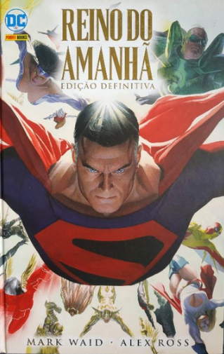

O Reino do Amanhã
O Reino do Amanhã é uma minissérie de quadrinhos escrita por Mark Waid e ilustrada por Alex Ross, publicada pela DC Comics em 1996. Explora temas como a natureza do heroísmo, da corrupção e da violência. A história se passa em um futuro onde os super-heróis são tratados como celebridades e são frequentemente envolvidos em violência. O Superman, que está aposentado, é chamado de volta à ativa quando um grupo de heróis jovens e violentos começa a causar estragos no mundo.
A história é contada em uma série de flashbacks e vinhetas, que exploram a história dos super-heróis e a evolução do mundo. A arte de Ross é realista e detalhada, e contribui para a atmosfera sombria da história.
O Reino do Amanhã é uma história controversa, que foi criticada por seu conteúdo violento e sua visão pessimista do futuro.
Comprar